| 지역 | 장소 | 회수 | 온난기 | 한랭기 | 번식기 | ||||
|---|---|---|---|---|---|---|---|---|---|
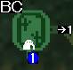 | 1 | 낚시 | －－－－－－ | 5% | －－－－－－ | 5% | －－－－－－ | 5% | |
| 예리어 | 10% | 예리어 | 20% | 예리어 | 10% | ||||
| 도스 예리어 | 10% | 도스 예리어 | 10% | 도스 예리어 | 10% | ||||
| 가시 참치 | 10% | 가시 참치 | 25% | 가시 참치 | 15% | ||||
| 도스 가시 참치 | 10% | 도스 가시 참치 | 10% | 도스 가시 참치 | 10% | ||||
| 수면어 | 10% | 툭툭 정어리 | 20% | 수면어 | 15% | ||||
| 도스 수면어 | 10% | 도스 툭툭 정어리 | 10% | 도스 수면어 | 10% | ||||
| 툭툭 정어리 | 10% | 툭툭 정어리 | 15% | ||||||
| 도스 툭툭 정어리 | 10% | 도스 툭툭 정어리 | 10% | ||||||
| 청새치 | 15% | ||||||||
| 1 | 낚시 | －－－－－－ | 10% | －－－－－－ | 10% | －－－－－－ | 10% | ||
| 예리어 | 10% | 예리어 | 20% | 예리어 | 10% | ||||
| 도스 예리어 | 10% | 도스 예리어 | 10% | 도스 예리어 | 10% | ||||
| 가시 참치 | 10% | 가시 참치 | 20% | 가시 참치 | 15% | ||||
| 도스 가시 참치 | 10% | 도스 가시 참치 | 10% | 도스 가시 참치 | 10% | ||||
| 툭툭 정어리 | 15% | 툭툭 정어리 | 20% | 툭툭 정어리 | 15% | ||||
| 도스 툭툭 정어리 | 10% | 도스 툭툭 정어리 | 10% | 도스 툭툭 정어리 | 10% | ||||
| 황금어 | 20% | 황금어 | 20% | ||||||
| 청새치 | 5% | ||||||||
| [낙－함정○폭○뇌－] 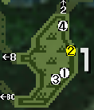 | 1 | 5-8회 | 가시 열매 | 43% | 가시 열매 | 62% | 가시 열매 | 75% | |
| 속 빈 열매 | 57% | 속 빈 열매 | 38% | 속 빈 열매 | 25% | ||||
| 2 | 잠자리채 | 2-5회 | 낚시용 메뚜기 | 35% | 낚시용 메뚜기 | 20% | 낚시용 메뚜기 | 41% | |
| 한약 벌레 | 28% | 한약 벌레 | 37% | 죽은 벌레 | 34% | ||||
| 죽은 벌레 | 4% | 죽은 벌레 | 40% | 희귀 풍뎅이 | 10% | ||||
| 희귀 풍뎅이 | 7% | 꿀 잠자리 | 3% | 꿀 잠자리 | 15% | ||||
| 꿀 잠자리 | 26% | ||||||||
| 3 | 2-3회 | 몬스터 배설물 | 77% | 몬스터 배설물 | 67% | 몬스터 배설물 | 97% | ||
| 괴조 비늘 | 23% | 괴조 비늘 | 33% | 괴조 비늘 | 3% | ||||
| 4 | 3-4회 | 속 빈 열매 | 100% | 속 빈 열매 | 62% | 속 빈 열매 | 74% | ||
| 툭툭 호두 | 38% | 툭툭 호두 | 26% | ||||||
| [낙－함정○폭○뇌－] | 1 | 5-8회 | 가시 열매 | 43% | 가시 열매 | 62% | 가시 열매 | 75% | |
| 속 빈 열매 | 57% | 속 빈 열매 | 38% | 속 빈 열매 | 25% | ||||
| 2 | 잠자리채 | 2-5회 | 낚시용 메뚜기 | 36% | 낚시용 메뚜기 | 32% | 낚시용 메뚜기 | 55% | |
| 한약 벌레 | 30% | 뇌광충 | 18% | 뇌광충 | 13% | ||||
| 희귀 풍뎅이 | 8% | 한약 벌레 | 42% | 희귀 풍뎅이 | 12% | ||||
| 꿀 잠자리 | 26% | 꿀 잠자리 | 8% | 꿀 잠자리 | 20% | ||||
| 3 | 2-3회 | 몬스터 배설물 | 77% | 몬스터 배설물 | 67% | 몬스터 배설물 | 97% | ||
| 괴조 비늘 | 23% | 괴조 비늘 | 33% | 괴조 비늘 | 3% | ||||
| 4 | 3-4회 | 속 빈 열매 | 100% | 속 빈 열매 | 62% | 속 빈 열매 | 74% | ||
| 툭툭 호두 | 38% | 툭툭 호두 | 26% | ||||||
| [낙○함정○폭○뇌－] 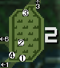 | 1 | 2-4회 | 약초 | 84% | 약초 | 100% | 약초 | 96% | |
| 아무것도없습니다. | 16% | 아무것도없습니다. | 4% | ||||||
| 2 | 1-3회 | 덩굴줄기 | 60% | 덩굴줄기 | 75% | 덩굴줄기 | 37% | ||
| 아무것도없습니다. | 40% | 아무것도없습니다. | 25% | 아무것도없습니다. | 63% | ||||
| 3 | 3-4회 | 속 빈 열매 | 57% | 속 빈 열매 | 38% | 속 빈 열매 | 25% | ||
| 가시 열매 | 43% | 가시 열매 | 62% | 가시 열매 | 75% | ||||
| 4 | 2-5회 | 페인트 열매 | 80% | 페인트 열매 | 75% | 페인트 열매 | 65% | ||
| 괴조 비늘 | 20% | 괴조 비늘 | 25% | 괴조 비늘 | 35% | ||||
| [낙○함정○폭○뇌－] | 1 | 2-4회 | 약초 | 84% | 약초 | 100% | 약초 | 96% | |
| 아무것도없습니다. | 16% | 아무것도없습니다. | 4% | ||||||
| 2 | 1-3회 | 덩굴줄기 | 60% | 덩굴줄기 | 75% | 덩굴줄기 | 37% | ||
| 아무것도없습니다. | 40% | 아무것도없습니다. | 25% | 아무것도없습니다. | 63% | ||||
| 3 | 3-4회 | 속 빈 열매 | 57% | 속 빈 열매 | 38% | 속 빈 열매 | 25% | ||
| 가시 열매 | 43% | 가시 열매 | 62% | 가시 열매 | 75% | ||||
| 4 | 2-5회 | 페인트 열매 | 80% | 페인트 열매 | 75% | 페인트 열매 | 65% | ||
| 괴조 비늘 | 20% | 괴조 비늘 | 25% | 괴조 비늘 | 35% | ||||
| [낙○함정○폭○뇌－] 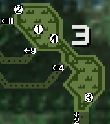 | 1 | 7-10회 | 속 빈 열매 | 97% | 속 빈 열매 | 78% | 속 빈 열매 | 65% | |
| 아무것도없습니다. | 3% | 아무것도없습니다. | 22% | 아무것도없습니다. | 35% | ||||
| 2 | 6-8회 | 니트로 버섯 | 42% | 엄선 버섯 | 7% | 니트로 버섯 | 35% | ||
| 특산 버섯 | 58% | 특산 버섯 | 93% | 엄선 버섯 | 10% | ||||
| 특산 버섯 | 55% | ||||||||
| 3 | 6-10회 | 속 빈 열매 | 90% | 속 빈 열매 | 70% | 속 빈 열매 | 80% | ||
| 죽은 벌레 | 10% | 죽은 벌레 | 30% | 죽은 벌레 | 20% | ||||
| 4 | 6-8회 | 약초 | 75% | 약초 | 68% | 약초 | 35% | ||
| 가시 열매 | 25% | 가시 열매 | 32% | 가시 열매 | 65% | ||||
| [낙○함정○폭○뇌－] | 1 | 7-10회 | 속 빈 열매 | 97% | 속 빈 열매 | 78% | 속 빈 열매 | 65% | |
| 아무것도없습니다. | 3% | 아무것도없습니다. | 22% | 아무것도없습니다. | 35% | ||||
| 2 | 6-8회 | 니트로 버섯 | 42% | 엄선 버섯 | 7% | 니트로 버섯 | 35% | ||
| 특산 버섯 | 58% | 특산 버섯 | 93% | 엄선 버섯 | 10% | ||||
| 특산 버섯 | 55% | ||||||||
| 3 | 6-10회 | 속 빈 열매 | 90% | 속 빈 열매 | 70% | 속 빈 열매 | 80% | ||
| 죽은 벌레 | 10% | 죽은 벌레 | 30% | 죽은 벌레 | 20% | ||||
| 4 | 6-8회 | 약초 | 75% | 약초 | 68% | 약초 | 35% | ||
| 가시 열매 | 25% | 가시 열매 | 32% | 가시 열매 | 65% | ||||
| [낙○함정○폭○뇌－] 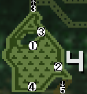 | 1 | 1-5회 | 페인트 열매 | 80% | 페인트 열매 | 65% | 페인트 열매 | 15% | |
| 속 빈 열매 | 20% | 속 빈 열매 | 35% | 속 빈 열매 | 85% | ||||
| 2 | 4-10회 | 가시 열매 | 90% | 가시 열매 | 75% | 가시 열매 | 15% | ||
| 속 빈 열매 | 10% | 속 빈 열매 | 25% | 속 빈 열매 | 85% | ||||
| 3 | 2-6회 | 약초 | 84% | 약초 | 100% | 약초 | 96% | ||
| 아무것도없습니다. | 16% | 아무것도없습니다. | 4% | ||||||
| 4 | 1-3회 | 툭툭 호두 | 38% | 툭툭 호두 | 94% | 툭툭 호두 | 65% | ||
| 파란 버섯 | 62% | 파란 버섯 | 6% | 파란 버섯 | 35% | ||||
| [낙○함정○폭○뇌－] | 1 | 1-5회 | 페인트 열매 | 80% | 페인트 열매 | 65% | 페인트 열매 | 15% | |
| 속 빈 열매 | 20% | 속 빈 열매 | 35% | 속 빈 열매 | 85% | ||||
| 2 | 4-10회 | 가시 열매 | 90% | 가시 열매 | 75% | 가시 열매 | 15% | ||
| 속 빈 열매 | 10% | 속 빈 열매 | 25% | 속 빈 열매 | 85% | ||||
| 3 | 2-6회 | 약초 | 84% | 약초 | 100% | 약초 | 96% | ||
| 아무것도없습니다. | 16% | 아무것도없습니다. | 4% | ||||||
| 4 | 1-3회 | 툭툭 호두 | 38% | 툭툭 호두 | 94% | 툭툭 호두 | 65% | ||
| 파란 버섯 | 62% | 파란 버섯 | 6% | 파란 버섯 | 35% | ||||
| [낙○함정○폭○뇌－] 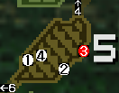 | 1 | 1-3회 | 몬스터 배설물 | 77% | 몬스터 배설물 | 67% | 몬스터 배설물 | 97% | |
| 괴조 비늘 | 23% | 괴조 비늘 | 33% | 괴조 비늘 | 3% | ||||
| 2 | 4-7회 | 의문의 뼈 | 95% | 의문의 뼈 | 88% | 비룡 알 | 90% | ||
| 의문의 두개골 | 5% | 의문의 두개골 | 12% | 의문의 뼈 | 8% | ||||
| 의문의 두개골 | 2% | ||||||||
| 3 | 채굴 | 3-8회 | 숫돌 | 23% | 숫돌 | 23% | 숫돌 | 23% | |
| 철광석 | 20% | 철광석 | 20% | 철광석 | 20% | ||||
| 수라 원주 | 6% | 수라 원주 | 6% | 수라 원주 | 6% | ||||
| 낡은 단지 몸통 | 2% | 낡은 단지 몸통 | 2% | 낡은 단지 몸통 | 2% | ||||
| 대지의 결정 | 15% | 대지의 결정 | 15% | 대지의 결정 | 15% | ||||
| 드라그라이트 광석 | 6% | 드라그라이트 광석 | 6% | 드라그라이트 광석 | 6% | ||||
| 마카라이트 광석 | 12% | 마카라이트 광석 | 12% | 마카라이트 광석 | 12% | ||||
| 첨개옥 | 10% | 첨개옥 | 10% | 첨개옥 | 10% | ||||
| 견개옥 | 6% | 견개옥 | 6% | 견개옥 | 6% | ||||
| 4 | 2-3회 | 의문의 뼈 | 74% | 의문의 뼈 | 89% | 의문의 뼈 | 82% | ||
| 괴조 비늘 | 18% | 괴조 비늘 | 3% | 괴조 비늘 | 10% | ||||
| 의문의 두개골 | 8% | 의문의 두개골 | 8% | 의문의 두개골 | 8% | ||||
| [낙○함정○폭○뇌－] | 1 | 1-3회 | 몬스터 배설물 | 77% | 몬스터 배설물 | 67% | 몬스터 배설물 | 97% | |
| 괴조 비늘 | 23% | 괴조 비늘 | 33% | 괴조 비늘 | 3% | ||||
| 2 | 4-7회 | 의문의 뼈 | 95% | 의문의 뼈 | 88% | 비룡 알 | 90% | ||
| 의문의 두개골 | 5% | 의문의 두개골 | 12% | 의문의 뼈 | 8% | ||||
| 의문의 두개골 | 2% | ||||||||
| 3 | 채굴 | 3-8회 | 돌멩이 | 10% | 돌멩이 | 10% | 돌멩이 | 10% | |
| 유니온 광석 | 6% | 유니온 광석 | 6% | 유니온 광석 | 6% | ||||
| 수라 원주 | 6% | 수라 원주 | 6% | 수라 원주 | 6% | ||||
| 낡은 단지 몸통 | 2% | 낡은 단지 몸통 | 2% | 낡은 단지 몸통 | 2% | ||||
| 철광석 | 26% | 철광석 | 26% | 철광석 | 26% | ||||
| 대지의 결정 | 15% | 대지의 결정 | 15% | 대지의 결정 | 15% | ||||
| 드라그라이트 광석 | 7% | 드라그라이트 광석 | 7% | 드라그라이트 광석 | 7% | ||||
| 마카라이트 광석 | 12% | 마카라이트 광석 | 12% | 마카라이트 광석 | 12% | ||||
| 첨개옥 | 10% | 첨개옥 | 10% | 첨개옥 | 10% | ||||
| 견개옥 | 6% | 견개옥 | 6% | 견개옥 | 6% | ||||
| 4 | 2-3회 | 의문의 뼈 | 74% | 의문의 뼈 | 89% | 의문의 뼈 | 82% | ||
| 괴조 비늘 | 18% | 괴조 비늘 | 3% | 괴조 비늘 | 10% | ||||
| 의문의 두개골 | 8% | 의문의 두개골 | 8% | 의문의 두개골 | 8% | ||||
| [낙－함정○폭○뇌－] 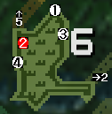 | 1 | 3-6회 | 거미줄 | 95% | 거미줄 | 65% | 거미줄 | 71% | |
| 죽은 벌레 | 5% | 죽은 벌레 | 35% | 죽은 벌레 | 29% | ||||
| 2 | 채굴 | 4-8회 | 돌멩이 | 28% | 돌멩이 | 28% | 돌멩이 | 28% | |
| 수라 원주 | 6% | 수라 원주 | 6% | 수라 원주 | 6% | ||||
| 유리 원주 | 8% | 유리 원주 | 8% | 유리 원주 | 8% | ||||
| 철광석 | 30% | 철광석 | 30% | 철광석 | 30% | ||||
| 대지의 결정 | 12% | 대지의 결정 | 12% | 대지의 결정 | 12% | ||||
| 첨개옥 | 10% | 첨개옥 | 10% | 첨개옥 | 10% | ||||
| 견개옥 | 6% | 견개옥 | 6% | 견개옥 | 6% | ||||
| 3 | 3-6회 | 덩굴줄기 | 60% | 덩굴줄기 | 75% | 덩굴줄기 | 37% | ||
| 아무것도없습니다. | 40% | 아무것도없습니다. | 25% | 아무것도없습니다. | 63% | ||||
| 4 | 3-7회 | 약초 | 64% | 약초 | 100% | 약초 | 76% | ||
| 점착초 | 36% | 점착초 | 24% | ||||||
| [낙－함정○폭○뇌－] | 1 | 3-6회 | 거미줄 | 95% | 거미줄 | 65% | 거미줄 | 71% | |
| 죽은 벌레 | 5% | 죽은 벌레 | 35% | 죽은 벌레 | 29% | ||||
| 2 | 채굴 | 4-8회 | 철광석 | 32% | 철광석 | 32% | 철광석 | 32% | |
| 대지의 결정 | 20% | 대지의 결정 | 20% | 대지의 결정 | 20% | ||||
| 수라 원주 | 6% | 수라 원주 | 6% | 수라 원주 | 6% | ||||
| 마카라이트 광석 | 15% | 마카라이트 광석 | 15% | 마카라이트 광석 | 15% | ||||
| 유니온 광석 | 6% | 유니온 광석 | 6% | 유니온 광석 | 6% | ||||
| 녹슨 덩이 | 1% | 녹슨 덩이 | 1% | 녹슨 덩이 | 1% | ||||
| 녹슨 작은 덩이 | 1% | 녹슨 작은 덩이 | 1% | 녹슨 작은 덩이 | 1% | ||||
| 녹슨 봉형 덩이 | 1% | 녹슨 봉형 덩이 | 1% | 녹슨 봉형 덩이 | 1% | ||||
| 녹슨 큰 덩이 | 1% | 녹슨 큰 덩이 | 1% | 녹슨 큰 덩이 | 1% | ||||
| 녹슨 판형 덩이 | 1% | 녹슨 판형 덩이 | 1% | 녹슨 판형 덩이 | 1% | ||||
| 첨개옥 | 10% | 첨개옥 | 10% | 첨개옥 | 10% | ||||
| 견개옥 | 6% | 견개옥 | 6% | 견개옥 | 6% | ||||
| 3 | 3-6회 | 덩굴줄기 | 60% | 덩굴줄기 | 75% | 덩굴줄기 | 37% | ||
| 아무것도없습니다. | 40% | 아무것도없습니다. | 25% | 아무것도없습니다. | 63% | ||||
| 4 | 3-7회 | 약초 | 64% | 약초 | 100% | 약초 | 76% | ||
| 점착초 | 36% | 점착초 | 24% | ||||||
| [낙－함정○폭○뇌－] 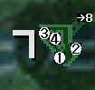 | 1 | 2-6회 | 약초 | 84% | 약초 | 100% | 약초 | 96% | |
| 아무것도없습니다. | 16% | 아무것도없습니다. | 4% | ||||||
| 2 | 3-4회 | 개다래 | 85% | 개다래 | 65% | 개다래 | 28% | ||
| 아무것도없습니다. | 15% | 아무것도없습니다. | 35% | 아무것도없습니다. | 72% | ||||
| 3 | 2-3회 | 벌꿀 | 90% | 벌꿀 | 23% | 벌꿀 | 65% | ||
| 죽은 벌레 | 10% | 죽은 벌레 | 77% | 죽은 벌레 | 35% | ||||
| 4 | 3-4회 | 특산 버섯 | 75% | 특산 버섯 | 93% | 특산 버섯 | 55% | ||
| 니트로 버섯 | 25% | 니트로 버섯 | 7% | 니트로 버섯 | 45% | ||||
| [낙－함정○폭○뇌－] | 1 | 2-6회 | 약초 | 84% | 약초 | 100% | 약초 | 96% | |
| 아무것도없습니다. | 16% | 아무것도없습니다. | 4% | ||||||
| 2 | 3-4회 | 개다래 | 85% | 개다래 | 65% | 개다래 | 28% | ||
| 아무것도없습니다. | 15% | 아무것도없습니다. | 35% | 아무것도없습니다. | 72% | ||||
| 3 | 2-3회 | 벌꿀 | 90% | 벌꿀 | 23% | 벌꿀 | 65% | ||
| 죽은 벌레 | 10% | 죽은 벌레 | 77% | 죽은 벌레 | 35% | ||||
| 4 | 3-4회 | 특산 버섯 | 75% | 특산 버섯 | 93% | 특산 버섯 | 55% | ||
| 니트로 버섯 | 25% | 니트로 버섯 | 7% | 니트로 버섯 | 45% | ||||
| [낙－함정○폭○뇌－] 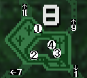 | 1 | 3-4회 | 거미줄 | 95% | 거미줄 | 65% | 거미줄 | 71% | |
| 죽은 벌레 | 5% | 죽은 벌레 | 35% | 죽은 벌레 | 29% | ||||
| 2 | 2-4회 | 덩굴줄기 | 70% | 덩굴줄기 | 85% | 덩굴줄기 | 42% | ||
| 죽은 벌레 | 30% | 죽은 벌레 | 15% | 죽은 벌레 | 58% | ||||
| 3 | 2-8회 | 약초 | 84% | 약초 | 100% | 약초 | 96% | ||
| 아무것도없습니다. | 16% | 아무것도없습니다. | 4% | ||||||
| 4 | 7-10회 | 툭툭 호두 | 38% | 툭툭 호두 | 94% | 툭툭 호두 | 65% | ||
| 파란 버섯 | 62% | 파란 버섯 | 6% | 파란 버섯 | 35% | ||||
| [낙－함정○폭○뇌－] | 1 | 3-4회 | 거미줄 | 95% | 거미줄 | 65% | 거미줄 | 71% | |
| 죽은 벌레 | 5% | 죽은 벌레 | 35% | 죽은 벌레 | 29% | ||||
| 2 | 2-4회 | 덩굴줄기 | 70% | 덩굴줄기 | 85% | 덩굴줄기 | 42% | ||
| 죽은 벌레 | 30% | 죽은 벌레 | 15% | 죽은 벌레 | 58% | ||||
| 3 | 2-8회 | 약초 | 84% | 약초 | 100% | 약초 | 96% | ||
| 아무것도없습니다. | 16% | 아무것도없습니다. | 4% | ||||||
| 4 | 7-10회 | 툭툭 호두 | 38% | 툭툭 호두 | 94% | 툭툭 호두 | 65% | ||
| 파란 버섯 | 62% | 파란 버섯 | 6% | 파란 버섯 | 35% | ||||
| [낙○함정○폭○뇌－] 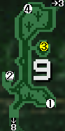 | 1 | 2-5회 | 약초 | 64% | 약초 | 80% | 약초 | 76% | |
| 수면초 | 36% | 수면초 | 20% | 수면초 | 24% | ||||
| 2 | 2-4회 | 벌꿀 | 80% | 벌꿀 | 5% | 벌꿀 | 55% | ||
| 아무것도없습니다. | 20% | 아무것도없습니다. | 95% | 아무것도없습니다. | 45% | ||||
| 3 | 잠자리채 | 5-8회 | 낚시용 반딧불이 | 37% | 낚시용 반딧불이 | 37% | 낚시용 반딧불이 | 46% | |
| 풀 반죽 메뚜기 | 28% | 꿀 잠자리 | 3% | 풀 반죽 메뚜기 | 18% | ||||
| 꿀 잠자리 | 21% | 왕족 풍뎅이 | 6% | 꿀 잠자리 | 13% | ||||
| 왕족 풍뎅이 | 10% | 죽은 벌레 | 54% | 왕족 풍뎅이 | 2% | ||||
| 죽은 벌레 | 4% | 죽은 벌레 | 21% | ||||||
| 4 | 4-6회 | 특산 버섯 | 75% | 특산 버섯 | 93% | 특산 버섯 | 55% | ||
| 괴조 비늘 | 25% | 괴조 비늘 | 7% | 괴조 비늘 | 45% | ||||
| [낙○함정○폭○뇌－] | 1 | 2-5회 | 약초 | 64% | 약초 | 80% | 약초 | 76% | |
| 수면초 | 36% | 수면초 | 20% | 수면초 | 24% | ||||
| 2 | 2-4회 | 벌꿀 | 80% | 벌꿀 | 5% | 벌꿀 | 55% | ||
| 아무것도없습니다. | 20% | 아무것도없습니다. | 95% | 아무것도없습니다. | 45% | ||||
| 3 | 잠자리채 | 5-8회 | 낚시용 반딧불이 | 43% | 낚시용 반딧불이 | 44% | 광충 | 36% | |
| 광충 | 21% | 광충 | 25% | 불사충 | 31% | ||||
| 왕족 풍뎅이 | 10% | 불사충 | 15% | 왕족 풍뎅이 | 5% | ||||
| 꿀 잠자리 | 26% | 왕족 풍뎅이 | 8% | 꿀 잠자리 | 28% | ||||
| 꿀 잠자리 | 8% | ||||||||
| 4 | 4-6회 | 특산 버섯 | 75% | 특산 버섯 | 93% | 특산 버섯 | 55% | ||
| 괴조 비늘 | 25% | 괴조 비늘 | 7% | 괴조 비늘 | 45% | ||||
| [낙○함정○폭○뇌－] 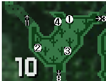 | 1 | 2-5회 | 수면초 | 95% | 수면초 | 84% | 수면초 | 72% | |
| 괴력의 씨앗 | 5% | 괴력의 씨앗 | 16% | 괴력의 씨앗 | 28% | ||||
| 2 | 3-7회 | 해독초 | 78% | 해독초 | 60% | 해독초 | 65% | ||
| 아무것도없습니다. | 22% | 아무것도없습니다. | 40% | 아무것도없습니다. | 35% | ||||
| 3 | 2-5회 | 페인트 열매 | 100% | 페인트 열매 | 65% | 페인트 열매 | 15% | ||
| 아무것도없습니다. | 35% | 아무것도없습니다. | 85% | ||||||
| 4 | 3-5회 | 특산 버섯 | 38% | 특산 버섯 | 65% | 특산 버섯 | 55% | ||
| 파란 버섯 | 62% | 엄선 버섯 | 7% | 엄선 버섯 | 10% | ||||
| 파란 버섯 | 28% | 파란 버섯 | 35% | ||||||
| [낙○함정○폭○뇌－] | 1 | 2-5회 | 수면초 | 95% | 수면초 | 84% | 수면초 | 72% | |
| 괴력의 씨앗 | 5% | 괴력의 씨앗 | 16% | 괴력의 씨앗 | 28% | ||||
| 2 | 3-7회 | 해독초 | 78% | 해독초 | 60% | 해독초 | 65% | ||
| 아무것도없습니다. | 22% | 아무것도없습니다. | 40% | 아무것도없습니다. | 35% | ||||
| 3 | 2-5회 | 페인트 열매 | 100% | 페인트 열매 | 65% | 페인트 열매 | 15% | ||
| 아무것도없습니다. | 35% | 아무것도없습니다. | 85% | ||||||
| 4 | 3-5회 | 특산 버섯 | 38% | 특산 버섯 | 65% | 특산 버섯 | 55% | ||
| 파란 버섯 | 62% | 엄선 버섯 | 7% | 엄선 버섯 | 10% | ||||
| 파란 버섯 | 28% | 파란 버섯 | 35% | ||||||
| [낙－함정○폭○뇌－] 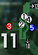 | 1 | ∞ | 낚시용 지렁이 | 100% | 낚시용 지렁이 | 71% | 낚시용 지렁이 | 88% | |
| 돌멩이 | 29% | 돌멩이 | 12% | ||||||
| 2 | 3-3회 | 돌멩이 | 75% | 돌멩이 | 75% | 돌멩이 | 75% | ||
| 숫돌 | 25% | 숫돌 | 25% | 숫돌 | 25% | ||||
| 3 | 채굴 | 3-8회 | 돌멩이 | 28% | 돌멩이 | 28% | 돌멩이 | 28% | |
| 수라 원주 | 6% | 수라 원주 | 6% | 수라 원주 | 6% | ||||
| 유리 원주 | 8% | 유리 원주 | 8% | 유리 원주 | 8% | ||||
| 철광석 | 30% | 철광석 | 30% | 철광석 | 30% | ||||
| 대지의 결정 | 12% | 대지의 결정 | 12% | 대지의 결정 | 12% | ||||
| 첨개옥 | 10% | 첨개옥 | 10% | 첨개옥 | 10% | ||||
| 견개옥 | 6% | 견개옥 | 6% | 견개옥 | 6% | ||||
| 4 | 2-4회 | 낚시용 지렁이 | 100% | 낚시용 지렁이 | 71% | 낚시용 지렁이 | 88% | ||
| 돌멩이 | 29% | 돌멩이 | 12% | ||||||
| 5 | 낚시 | －－－－－－ | 5% | －－－－－－ | 5% | －－－－－－ | 5% | ||
| 예리어 | 15% | 예리어 | 23% | 예리어 | 15% | ||||
| 도스 예리어 | 10% | 도스 예리어 | 10% | 도스 예리어 | 10% | ||||
| 횟감용 생선 | 25% | 횟감용 생선 | 30% | 횟감용 생선 | 25% | ||||
| 수면어 | 15% | 툭툭 정어리 | 22% | 수면어 | 15% | ||||
| 도스 수면어 | 10% | 도스 툭툭 정어리 | 10% | 도스 수면어 | 10% | ||||
| 툭툭 정어리 | 10% | 툭툭 정어리 | 10% | ||||||
| 도스 툭툭 정어리 | 10% | 도스 툭툭 정어리 | 10% | ||||||
| [낙－함정○폭○뇌－] | 1 | ∞ | 낚시용 지렁이 | 100% | 낚시용 지렁이 | 71% | 낚시용 지렁이 | 88% | |
| 돌멩이 | 29% | 돌멩이 | 12% | ||||||
| 2 | 3-3회 | 돌멩이 | 75% | 돌멩이 | 75% | 돌멩이 | 75% | ||
| 숫돌 | 25% | 숫돌 | 25% | 숫돌 | 25% | ||||
| 3 | 채굴 | 3-8회 | 돌멩이 | 28% | 돌멩이 | 28% | 돌멩이 | 28% | |
| 수라 원주 | 6% | 수라 원주 | 6% | 수라 원주 | 6% | ||||
| 유리 원주 | 8% | 유리 원주 | 8% | 유리 원주 | 8% | ||||
| 철광석 | 30% | 철광석 | 30% | 철광석 | 30% | ||||
| 대지의 결정 | 12% | 대지의 결정 | 12% | 대지의 결정 | 12% | ||||
| 첨개옥 | 10% | 첨개옥 | 10% | 첨개옥 | 10% | ||||
| 견개옥 | 6% | 견개옥 | 6% | 견개옥 | 6% | ||||
| 4 | 2-4회 | 낚시용 지렁이 | 100% | 낚시용 지렁이 | 71% | 낚시용 지렁이 | 88% | ||
| 돌멩이 | 29% | 돌멩이 | 12% | ||||||
| 5 | 낚시 | －－－－－－ | 10% | －－－－－－ | 10% | －－－－－－ | 10% | ||
| 예리어 | 15% | 예리어 | 20% | 예리어 | 15% | ||||
| 도스 예리어 | 10% | 도스 예리어 | 12% | 도스 예리어 | 10% | ||||
| 횟감용 생선 | 25% | 횟감용 생선 | 27% | 횟감용 생선 | 25% | ||||
| 툭툭 정어리 | 10% | 툭툭 정어리 | 16% | 툭툭 정어리 | 10% | ||||
| 도스 툭툭 정어리 | 10% | 도스 툭툭 정어리 | 12% | 도스 툭툭 정어리 | 10% | ||||
| 파열 아로와나 | 10% | 고대어 | 3% | 파열 아로와나 | 10% | ||||
| 도스 아로와나 | 10% | 도스 아로와나 | 10% | ||||||
| [낙－함정○폭○뇌－] 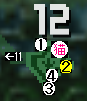 | 1 | 3-3회 | 거미줄 | 95% | 거미줄 | 65% | 거미줄 | 71% | |
| 죽은 벌레 | 5% | 죽은 벌레 | 35% | 죽은 벌레 | 29% | ||||
| 2 | 잠자리채 | 3-5회 | 낚시용 메뚜기 | 35% | 낚시용 메뚜기 | 20% | 낚시용 메뚜기 | 41% | |
| 한약 벌레 | 28% | 한약 벌레 | 37% | 죽은 벌레 | 34% | ||||
| 죽은 벌레 | 4% | 죽은 벌레 | 40% | 희귀 풍뎅이 | 10% | ||||
| 희귀 풍뎅이 | 7% | 꿀 잠자리 | 3% | 꿀 잠자리 | 15% | ||||
| 꿀 잠자리 | 26% | ||||||||
| 3 | 2-4회 | 큰 술통 | 62% | 큰 술통 | 62% | 큰 술통 | 62% | ||
| 의문의 뼈 | 30% | 의문의 뼈 | 30% | 의문의 뼈 | 30% | ||||
| 의문의 두개골 | 8% | 의문의 두개골 | 8% | 의문의 두개골 | 8% | ||||
| 4 | 3-5회 | 작은 술통 | 65% | 작은 술통 | 65% | 작은 술통 | 65% | ||
| 마카 절임 단지 | 30% | 마카 절임 단지 | 30% | 마카 절임 단지 | 30% | ||||
| 분실물 우산 | 5% | 분실물 우산 | 5% | 분실물 우산 | 5% | ||||
| [낙－함정○폭○뇌－] | 1 | 3-3회 | 거미줄 | 95% | 거미줄 | 65% | 거미줄 | 71% | |
| 죽은 벌레 | 5% | 죽은 벌레 | 35% | 죽은 벌레 | 29% | ||||
| 2 | 잠자리채 | 3-5회 | 낚시용 메뚜기 | 36% | 낚시용 메뚜기 | 32% | 낚시용 메뚜기 | 55% | |
| 한약 벌레 | 30% | 뇌광충 | 18% | 뇌광충 | 13% | ||||
| 희귀 풍뎅이 | 8% | 한약 벌레 | 42% | 희귀 풍뎅이 | 12% | ||||
| 꿀 잠자리 | 26% | 꿀 잠자리 | 8% | 꿀 잠자리 | 20% | ||||
| 3 | 2-4회 | 큰 술통 | 62% | 큰 술통 | 62% | 큰 술통 | 62% | ||
| 의문의 뼈 | 30% | 의문의 뼈 | 30% | 의문의 뼈 | 30% | ||||
| 의문의 두개골 | 8% | 의문의 두개골 | 8% | 의문의 두개골 | 8% | ||||
| 4 | 3-5회 | 작은 술통 | 65% | 작은 술통 | 65% | 작은 술통 | 65% | ||
| 마카 절임 단지 | 30% | 마카 절임 단지 | 30% | 마카 절임 단지 | 30% | ||||
| 분실물 우산 | 5% | 분실물 우산 | 5% | 분실물 우산 | 5% | ||||